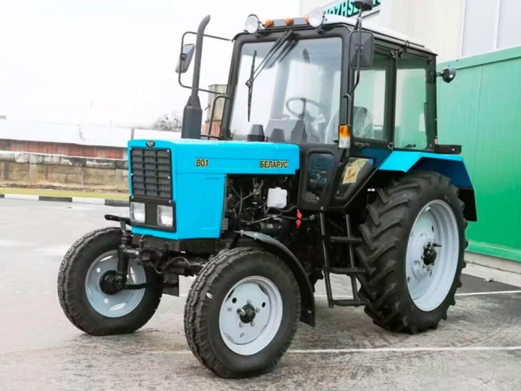

МТЗ Беларус 80.1

МТЗ Беларус 80.1 – це класичний універсально-просапний трактор, який є модернізованою версією МТЗ-80 і залишається однією з найпопулярніших машин у господарствах завдяки своїй простоті та надійності. Головною рисою цієї моделі є задній привід (4х2), що робить її економічно вигідною для робіт, де не потрібна висока прохідність повного приводу, наприклад, на легких ґрунтах або транспортних операціях.
Модель 80.1 вирізняється високою ремонтопридатністю: конструкція дозволяє проводити більшість сервісних робіт безпосередньо в полі. Трактор має механічну коробку передач на 18 швидкостей вперед та 4 назад, що забезпечує гнучкість у виборі робочого режиму. Завдяки доступності запчастин та універсальності, цей трактор ефективно використовується як у рослинництві (культивація, посів), так і в комунальному господарстві чи садових роботах.
| Параметр | Значення |
|---|---|
| Клас тяги | 1.4 |
| Тип ходової частини | колісний |
| Колісна формула | 4х2 (задній привід) |
| Тип рами | напіврамна конструкція |
| Основне призначення | універсально-просапні роботи, догляд за посівами, збирання врожаю, транспортні операції |
| Параметр | Значення |
|---|---|
| Модель | Д-243 |
| Тип двигуна | 4-циліндровий, дизельний, атмосферний |
| Спосіб охолодження | рідинне |
| Розташування циліндрів | рядне, вертикальне |
| Робочий об’єм | 4750 см³ (4,75 л) |
| Діаметр поршня / Хід поршня | 110 × 125 мм |
| Номінальна потужність | 60 кВт (81 к.с.) |
| Номінальні оберти | 2200 об/хв |
| Максимальний крутний момент | 298 Н·м |
| Питома витрата палива | 226 – 229 г/кВт·год |
| Параметр | Значення |
|---|---|
| Муфта зчеплення | суха, однодискова, постійно замкнута |
| Тип КПП | механічна, ступінчаста (з понижуючим редуктором) |
| Кількість передач | 18 вперед / 4 назад |
| Тип реверсу | відсутній (механічне перемикання заднього ходу) |
| Діапазон швидкостей (вперед) | 1,9 – 34,3 км/год |
| Вал відбору потужності | незалежний двошвидкісний (540 / 1000 об/хв) |
| Діапазон | Передача | Теоретична швидкість, км/год | Передаточне число (загальне) | Тягове зусилля, кН |
|---|---|---|---|---|
| Знижені передачі | 1 | 1,89 | 240,5 | 14,00* |
| Знижені передачі | 2 | 3,21 | 141,6 | 14,00* |
| Знижені передачі | 3 | 5,31 | 85,6 | 14,00* |
| Знижені передачі | 4 | 6,73 | 67,5 | 13,80 |
| Знижені передачі | 5 | 9,15 | 49,6 | 10,10 |
| Знижені передачі | 6 | 10,20 | 44,5 | 9,10 |
| Знижені передачі | 7 | 11,40 | 39,8 | 8,10 |
| Знижені передачі | 8 | 13,30 | 34,1 | 7,00 |
| Знижені передачі | 9 | 25,90 | 17,5 | 3,60 |
| Підвищені передачі | 1 | 2,50 | 181,8 | 14,00* |
| Підвищені передачі | 2 | 4,24 | 107,2 | 14,00* |
| Підвищені передачі | 3 | 7,02 | 64,7 | 13,20 |
| Підвищені передачі | 4 | 8,90 | 51,0 | 10,40 |
| Підвищені передачі | 5 | 7,72 | 58,8 | 12,00 |
| Підвищені передачі | 6 | 12,10 | 37,5 | 7,60 |
| Підвищені передачі | 7 | 15,10 | 30,1 | 6,10 |
| Підвищені передачі | 8 | 17,50 | 25,9 | 5,30 |
| Підвищені передачі | 9 | 34,30 | 13,2 | 2,70 |
| Параметр | Значення |
|---|---|
| Тип коліс | пневматичні шини |
| Марка шин (П/З) | 9.00R20 / 15.5R38 |
| Радіус ведучого колеса | ~0,77 м |
| Підвіска | передня — жорстка/пружинна, задня — жорстка |
| Радіус повороту | 3,8 м |
| Блокування диференціалу | механічне (педаллю) або гідравлічне |
| Параметр | Значення |
|---|---|
| Під час роботи з навантаженням | 12,5 – 14,0 кг/год |
| Під час холостих переїздів | 5,5 – 7,0 кг/год |
| Під час зупинок (холостий хід) | 0,8 – 1,1 кг/год |
| Параметр | Значення |
|---|---|
| Експлуатаційна маса (базова) | 3700 кг |
| Максимальна допустима вага | 6300 кг |
| Довжина / Ширина / Висота | 3810 / 1970 / 2785 мм |
| Колісна база | 2370 мм |
| Об’єм паливного баку | 130 л |
| Параметр | Значення |
|---|---|
| Гідравлічна система | роздільно-агрегатна, 45 л/хв |
| Вантажопідйомність навіски | 3200 кг |
| Тип управління навіскою | механічне (силовий/позиційний регулятор) |
| Електросистема | 12В (пуск двигуна — стартер 24В через ПЖ) |